대기환경기사 (2012-05-20 기출문제)
1과목: 대기오염 개론
1. 대기분산모델에 관한 설명으로 옳지 않은 것은?
- RAMS는 바람장모델로서 바람장과 오염물질의 분산을 동시에 계산한다.
- ADMS는 광화학모델로서 미국에서 범용적으로 복잡한 지형에 대해 오염물질의 이동을 계산한다.
- ISCLT는 가우시안 모델로서 미국에서 널리 이용되는 범용적 모델로 장기농도 계산에 유용하다.
- AUSPLUME는 가우시안모델로서 미국의 ISCST와 ISCLT모델을 개조하여 만든 것이다.
(정답률: 72%)

2. 오존에 관한 설명으로 옳지 않은 것은? (단, 대류권내 오존 기준)
- 보통 지표오존의 배경농도는 1-2ppm 범위이다.
- 오존은 태양빛, 자동차 배출원인 질소산화물과 휘발성유기 화합물 등에 의해 일어나는 복잡한 광화학반응으로 생성된다.
- 오염된 대기 중에서 오존농도에 영향을 주는 것은 태양빛의 강도, NO2/NO의 비 , 반응성 탄화수소농도 등이다.
- 국지적인 광화학스모그로 생성된 Oxidant의 지표물질이다.
(정답률: 84%)
3. 냄새물질의 특성에 관한 설명으로 옳지 않은 것은?
- 냄새물질이 비교적 저 분자인 것은 휘발성이 높은 것을 의미한다.
- 냄새물질은 산화, 환원반응, 중합·분해반응, 에스테르화·가수분해반응이 잘 일어난다.
- 분자 내의 수산기는 15-16일 때 냄새물질의 강도가 가장 강하다.
- 락톤 및 케톤화합물은 환상이 크게 되면 냄새가 강해진다.
(정답률: 78%)
4. Deacon 법칙을 이용하여 풍속지수(p)가 0.28인 조건에서 지표높이 10m에서의 풍속이 4m/sec일 때, 상공의 풍속이 12m/sec가 되는 위치의 높이는 지표로부터 약 얼마인가?
- 약 200m
- 약 300m
- 약 400m
- 약 500m
(정답률: 51%)
5. 대기오염이 식물에 미치는 영향에 관한 설명으로 가장 거리가 먼 것은?
- SO2는 회색반점을 생성하며, 피해부분은 엽육세포이다.
- PAN은 유리화, 은백색 광택을 나타내며, 주로 해면연조직에 피해를 준다.
- NO2는 불규칙 흰색 또는 갈색으로 변화되며, 피해부분은 엽육세포이다.
- HF는 SO2와 같이 잎 안쪽부분에 반점을 나타내기 시작하며, 늙은잎에 특히 민감하며 , 밤에 피해가 현저하다.
(정답률: 82%)
6. 산란에 관한 설명으로 옳지 않은 것은?
- Rayleigh는 "맑은 하늘 또는 저녁노을은 공기 분자에 의한 빛의 산란에 의한 것"이라는 것을 발견하였다.
- 빛을 입자가 들어있는 어두운 상자 안으로 도입시킬 때 산란광이 나타나며 이것을 틴달빛 이라고 한다.
- Mie 산란의 결과는 입사빛의 파장에 대하여 입자가 대단히 작은 경우에만 적용되는 반면, Rayleigh의 결과는 모든 입경에 대하여 적용된다.
- 입자에 빛이 조사될 때 산란의 경우, 동일한 파장의 빛이 여러 방향으로 다른 강도로 산란되는 반면, 흡수의 경우는 빛에너지가 열, 화학반응의 에너지로 변환된다.
(정답률: 79%)
7. 실내오염물질인 라돈에 관한 설명으로 옳지 않은 것은?
- 일반적으로 인체에 미치는 영향으로 폐암을 유발한다.
- 자연계에 널리 존재하며 주로 건축자재를 통해 인체에 영향을 미친다.
- 흙속에서 방사선 붕괴를 일으키며, 화학적으로는 거의 반응을 일으키지 않는다.
- 라돈은 무색, 무취의 기체로 액화되면 갈색을 띄며, 반감기는 5.8일간으로 라듐의 핵분열시 생성되는 물질이다.
(정답률: 78%)
8. 복사이론에 관련된 법칙 중 최대 에너지 파장과 흑체표면의 절대온도가 반비례함을 나타내는 것은? (단, 상수 2897 적용)
- 스테판 - 볼츠만의 법칙
- 플랑크 법칙
- 비인의 변위법칙
- 플래밍 법칙
(정답률: 82%)
9. 대기의 특성에 관한 설명으로 옳지 않은 것은?
- 성층권에서는 오존이 자외선을 흡수하여 성층권의 온도를 상승시킨다.
- 지표부근의 표준상태에서의 건조공기의 구성성분은 부피농도로 질소 ＞산소 ＞아르곤 ＞이산화탄소 순이다.
- 대기의 온도는 위쪽으로 올라갈수록, 대류권에서는 하강, 성층권에서는 상승 , 열권에서는 하강한다.
- 대류권의 고도는 겨울철에 낮고, 여름철에 높으며, 보통 저위도 지방이 고위도 지방에 비해 높다.
(정답률: 79%)
10. 0.2%(V/V)의 SO2를 포함하고 매연 발생량이 500m3/min 인 매연이 연간 30%가 A지역으로 흘러가 이 지역의 식물에 피해를 주었다. 10년 후에 이 A지역에 피해를 준 SO2양은? (단, 표준상태 기준, 기타조건은 고려하지 않음 )
- 약 3,000톤
- 약 4,500톤
- 약 6,000톤
- 약 9,000톤
(정답률: 60%)
11. 다음과 같은 증상 및 징후를 나타내는 오염물질로 가장 적합한 것은?
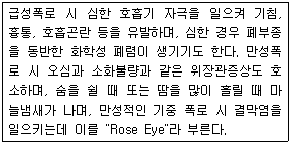
- 베릴륨(Be)
- 탈리움(Ti)
- 알루미늄(Al)
- 셀레늄(Se)
(정답률: 63%)
12. 연기의 형태에 관한 다음 설명 중 옳지 않은 것은?
- 지붕형 : 하층에 비하여 상층이 안정한 대기상태를 유지할 때 발생한다.
- 환상형 : 과단열감률 조건일 때, 즉 대기가 불안정할 때 발생한다.
- 원추형 : 오염의 단면분포가 전형적인 가우시안분포를 이루며, 대기가 중립 조건일 때 잘 발생한다.
- 부채형 : 연기가 배출되는 상당한 고도까지도 강안정한 대기가 유지될 경우, 즉 기온역전현상을 보이는 경우 연직운동이 억제되어 발생한다.
(정답률: 72%)
13. 대기오염 예측의 기본이 되는 난류확산방정식은 시간에 따른 오염물 농도의 변화를 선형화한 여러 항으로 구성된다. 다음 중 방정식을 선형화 하고자 할 때 고려해야 할항으로 가장 거리가 먼 것은?
- 바람에 의한 수평방향 이류항
- 난류에 의한 분산항
- 분자 확산에 의한 항
- 화학(연소)반응에 의해 변화하는 항
(정답률: 69%)
14. 질소산화물(NOx)에 관한 설명으로 옳지 않은 것은?
- NOx의 인위적 배출량 중 거의 대부분이 연소과정에서 발생된다.
- NOx는 그 자체도 인체에 해롭지만 광화학스모그의 원인 물질로도 중요한 역할을 한다.
- 연소과정에서 처음 발생되는 NOx는 주로 NO이다.
- 연소시 연료 중 질소의 NO 변환율은 대체로 약 2-5% 범위이다.
(정답률: 75%)
15. 대기오염모델 중 수용모델의 특징에 관한 설명으로 옳지 않은 것은?
- 측정자료를 입력자료로 사용하므로 시나리오 작성이 용이하여 미래예측이 쉽다.
- 입자상 및 가스상 물질, 가시도 문제 등 환경전반에 응용할 수 있다.
- 지형, 기상학적 정보가 없는 경우도 사용이 가능하다.
- 수용체 입장에서 영향평가가 현실적으로 이루어질 수 있다.
(정답률: 76%)
16. 다음 설명에 해당하는 대기분산모델로 가장 적합한 것은?
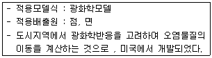
- ADMS
- AUSPLUME
- UAM
- SMOGSTOP
(정답률: 78%)
17. 최대혼합고도를 350m로 예상하여 오염농도를 3.5ppm으로 수정하였는데 실제 관측된 최대혼합고는 175m 였다. 이 때 실제 나타날 오염농도는?
- 16ppm
- 28ppm
- 32ppm
- 48ppm
(정답률: 56%)
18. 다음 중 새로운 공장이나 화력발전소를 건설할 경우 굴뚝의 높이를 결정해야 하는데, 이 경우 먼저 고려되어야 할 사항으로 가장 거리가 먼 것은?
- 공장에서 방출될 대기오염물질의 양 (Q)
- 최대 허용농도 (C)
- 고려되어야 할 하류지점까지의 거리(X)와 풍속(U)
- 먼지의 침강속도(Vt)와 점성계수(μ)
(정답률: 65%)
19. 리차드슨 (Richardson)수에 관한 설명으로 옳지 않은 것은?
- 0 인 경우는 기계적 난류만 존재한다.
- 무차원수로서 근본적으로 대류난류를 기계적인 난류로 전환시키는 율을 측정한 것이다.
- 큰 음의 값을 가지면 대류가 지배적이어서 바람이 약하게 된다.
- 0.25보다 크게 되면 수직혼합만 남는다.
(정답률: 59%)
20. 광화학 스모그 현상에 관한 설명으로 가장 거리가 먼 것은?
- LA형 스모그는 광화학 스모그의 대표적인 피해사례이다.
- 광화학반응에 의해 생성된 물질은 미산란 효과에 의해 대기의 파장변화와 가시도의 증가를 초래한다.
- 광화학 옥시던트 물질은 인체의 눈, 코, 점막을 자극하고, 폐기능을 약화시킨다.
- 정상상태일 경우 오존의 대기 중 오존농도는 NO2와 NO비, 태양빛의 강도 등에 의해 좌우된다.
(정답률: 74%)
2과목: 연소공학
21. 저위발열량이 9000kcal/Sm3인 기체연료를 15℃의 공기로 연소할 때 이론연소가스량 25Sm3/Sm3이고, 이론연소온도는 2500℃이다. 이 때 연료가스의 평균정압비열 (kcal/Sm3·℃ ) 은 ? (단, 기타조건은 고려하지 않음)
- 0.145
- 0.243
- 0.384
- 0.432
(정답률: 54%)
22. 다음의 연소온도(to) 산출 식에서 각각의 물리적 변수에 대한 설명으로 옳지 않은 것은?
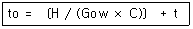
- H는 연료의 저위발열량을 의미하며, 단위는 kcal/kg 또는 kcal/Sm3 이다.
- Gow는 이론 습연소가스량을 의미하며, 단위는 Sm3/kg 또는 Sm3/Sm3 이다.
- C는 연소가스의 평균정압비열을 의미하며, 단위는 kcal/Sm3·℃ 이다.
- t는 배출가스의 연소온도를 의미하며, 단위는 ℃ 이다.
(정답률: 61%)
23. 다음은 연료에 관한 설명이다. ( )안에 알맞은 것은?
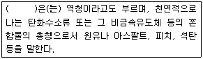
- 브라이트 스톡 (Bright Stock)
- 베이시스 (Bases)
- 비츄멘 (Bitumen)
- 브리넬링 (Brinelling)
(정답률: 63%)
24. Butane 1Sm3을 과잉공기 20%로 완전연소 시켰을 때 생성되는 습배출가스 중 CO2의 농도는 몇 Vol% 인가?
- 8.4%
- 10.1%
- 12.6%
- 14.8%
(정답률: 49%)
25. 다음 중 착화온도( ℃ )가 가장 낮은 연료는?
- 코크스
- 메탄
- 일산화탄소
- 이탄(자연건류)
(정답률: 47%)
26. 어떤 액체연료 1kg 중 C :85%, H :10%, O :2%, N :1%, S :2%가 포함되어 있다. 이 연료를 공기비 1.3으로 완전연소 시킬 때 발생하는 실제 습배출가스량(Sm3/kg)은 ?
- 8.6
- 9.8
- 10.4
- 13.9
(정답률: 39%)
27. LPG와 LNG에 대한 설명으로 옳지 않은 것은?
- LNG는 천연가스를 -168℃ 정도로 냉각하여 액화시킨 것으로 액화천연가스이다.
- LNG의 주성분은 대부분이 메탄이고 그 외에 에탄, 프로판, 부탄 등으로 구성되어 있다.
- LPG는 주로 Naphtha의 열분해에 의해 제조된 것으로 자동차용 연료는 프로판 , 가정용에는 부탄이 주로 사용된다.
- LPG는 밀도가 공기보다 커서 누출 시 건물의 바닥에 모이게 되고 LNG는 공기보다 가벼워 건물의 천장에 모이는 경향이 있다.
(정답률: 55%)
28. 다음 중 기체연료 연소장치에 해당하지 않는 것은?
- 송풍 버너
- 선회 버너
- 방사형 버너
- 로터리 버너
(정답률: 70%)
29. 다음 중 그을음이 잘 발생하기 쉬운 연료 순으로 나열한 것은? (단, 쉬운 연료 ＞어려운 연료)
- 타르 ＞중유 ＞ 석탄가스 ＞LPG
- 석탄가스 ＞LPG ＞ 타르 ＞중유
- 중유 ＞LPG ＞ 석탄가스 ＞타르
- 중유 ＞타르 ＞ LPG ＞석탄가스
(정답률: 75%)
30. 유동층 연소시설의 일반적인 특성으로 옳지 않은 것은?
- NOx 생성억제에 효과가 있다.
- 유동매체는 모래와 같은 내열성 분립체로 비중이 클수록 좋다.
- 별도의 배연탈황 설비가 불필요하다.
- 재나 미연탄소의 방출이 많고 부하변동에 따른 적응이 어렵다.
(정답률: 53%)
31. 혼합가스에 포함된 기체의 조성이 부피기준으로 메탄이 10%, 프로판이 30%, 부탄이 60%인 기체연료가 있다. 이 기체연료 0.67 L를 완전연소 하는데 필요한 이론 공기량은?(단, 연료와 공기는 동일 조건의 기체이다.)
- 17.9L
- 19.6L
- 22.2L
- 26.7L
(정답률: 44%)
32. 다음 기체연료 중 고위발열량(kJ/mole)이 가장 큰 것은?
- Carbon Monoxide
- Methane
- Ethane
- N - Pentane
(정답률: 76%)
33. 메탄과 프로판이 1 : 2로 혼합된 기체연료의 고위발열량이 19400 kcal/Sm3 이다. 이 기체연료의 저위발열량 (kcal/Sm3)은?
- 11500
- 13600
- 15300
- 17800
(정답률: 49%)
34. C: 78%, H: 22%로 구성되어 있는 액체연료 1kg을 공기비 1.2로 연소하는 경우에 C의 1%가 검댕으로 발생된다고 하면 건연소가스 1Sm3중의 검댕의 농도(g/Sm3)는 약 얼마인가?
- 0.55
- 0.75
- 0.95
- 1.⑤
(정답률: 42%)
35. 다음 중 흑연, 코크스, 목탄 등과 같이 대부분 탄소로만으로 되어 있고, 휘발성분이 거의 없는 연소의 형태로 가장 적합한 것은?
- 자기연소
- 확산연소
- 표면연소
- 분해연소
(정답률: 78%)
36. 2%의 황성분을 함유한 석탄 2.3ton을 완전연소 시 발생하는 아황산가스의 이론 부피는 약 몇 Sm3인가? (단, 표준상태를 기준으로 하며, 모든 황성분은 아황산가스로 산화된다.)
- 32
- 21
- 16
- 14
(정답률: 53%)
37. 폭굉에 관한 설명 중 옳지 않은 것은?
- 연소파의 전파속도가 음속을 초월하는 것으로 연소파의 진행에 앞서 충격파가 진행되어 심한 파괴작용을 동반한다.
- 정상의 연소속도가 큰 혼합가스일 경우 폭굉유도거리는 짧아진다.
- 폭굉온도는 보통 연소온도보다 3-5배 정도 높고, 압력은 15-20배에 달한다.
- 관 속에 방해물질이 없거나 관내경이 굵을수록 폭굉유도거리는 길어진다.
(정답률: 47%)
38. 다음 중 기체연료의 연소장치로서 천연가스와 같은 고발열량 연료를 연소시키는데 가장 적합하게 사용되는 버너의 종류는 ?
- 선회형 버너
- 방사형 버너
- 회전식 버너
- 건타입 버너
(정답률: 65%)
39. 다음 중 액체연료의 일반적인 특징으로 거리가 먼 것은?
- 인화 및 역화의 위험이 크다.
- 점화, 소화 및 연소조절이 어렵다.
- 발열량이 높고 계량이 용이하다.
- 연소온도가 높아 국부적인 과열을 일으키기 쉽다.
(정답률: 67%)
40. C = 78(중량%), H = 18(중량%), S = 4(중량%)인 중유의 (CO2)max은 약 몇 %인가? ( 단, 표준상태, 건조가스 기준)
- 20.6
- 17.6
- 14.8
- 13.4
(정답률: 33%)
3과목: 대기오염 방지기술
41. 다음 중 활성탄 흡착법을 이용하여 악취를 제거하고자 할 때 거의 효과가 거의 없는 것은?
- 페놀 (Phenol)
- 스타이렌 (Styrene)
- 에틸머캡탄 (Ethyl Mercaptan)
- 암모니아 (Ammonia)
(정답률: 66%)
42. 후드(Hood)의 형식과 선정방법에 관한 설명으로 옳지 않은 것은?
- 작업 또는 공정상 발생원을 전혀 포위할 수 없는 경우에는 부스식 (Booth type)을 선택한다.
- 유독한 오염물질의 발생원을 포위할 수 있는 경우에는 포위식 (Enclosure type)을 선택한다.
- 고열을 내는 발생원에서 열부력에 의한 상승기류나 회전체에 의한 관성기류와 같이 일정한 방향으로 오염기류가 발생하는 경우에는 리시버식 (Receiving type)을 선택한다.
- 후드 개구의 바깥주변에 플랜지를 부착하면 오염물질의 제어에 필요하지 않은 후드 뒤쪽의 공기흡입을 방지할 수 있고, 그 결과 포착속도가 커지는 이점이 있다.
(정답률: 45%)
43. 배연탈황법 중 석회석주입법에 관한 설명으로 옳지 않은 것은?
- 석회석 재생 뿐만 아니라 부대설비가 많이 소요된다.
- 배출가스의 온도가 떨어지지 않는 장점이 있다.
- 소규모 보일러나 노후된 보일러에 많이 사용되어 왔다.
- 연소로 내에서 짧은 접촉시간을 가지며, 아황산가스가 석회분말 표면안으로 침투가 어렵다.
(정답률: 66%)
44. 유해가스의 흡수이론에 관한 설명으로 옳지 않은 것은?
- 흡수는 기체상태의 오염물질을 흡수액을 사용하여 흡수 제거시키는 것으로 세정이라고도 한다.
- 흡수조작에 사용되는 흡수제는 물 또는 수용액을 주로 사용한다.
- 배출가스의 용매에 대한 용해도가 큰 기체인 경우에 헨리의 법칙이 적용될 수 있다.
- 용해에 따른 복잡한 화학반응이 일어날 경우에는 성립하지 않는다.
(정답률: 59%)
45. 다음과 같은 특성을 가진 유해물질은?
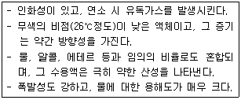
- 시안화수소 (HCN)
- 아세트산 (CH3COOH)
- 벤젠 (C6H6)
- 염소 (Cl2)
(정답률: 68%)
46. 세정집진장치의 장점으로 가장 적합한 것은?
- 폐수처리 설비가 필요치 않다.
- 소수성 먼지에 대해 높은 집진효율을 얻을 수 있다.
- 친수성이 크고 부착성이 높은 먼지에 의한 폐색 등의 장애가 일어나지 않는다.
- 가동부분이 적고, 조해성 먼지제거가 용이하다.
(정답률: 40%)
47. 다음 중 기체분산형 흡수장치에 해당하는 것은?
- Venturi Scrubber
- Plate Tower
- Packed Tower
- Spray Tower
(정답률: 63%)
48. 유체의 점성에 관한 설명으로 옳지 않은 것은?
- 점성은 유체분자 상호간에 작용하는 분자응집력과 인접 유체층 간의 분자운동에 의하여 생기는 운동량 수송에 기인한다.
- 액체의 점성계수는 주로 분자응집력에 의하므로 온도의 상승에 따라 낮아진다.
- Hagen의 점성법칙은 점성의 결과로 생기는 전단응력은 유체의 속도구배에 반비례한다.
- 점성계수는 온도에 의해 영향을 받지만 압력과 습도에는 거의 영향을 받지 않는다.
(정답률: 61%)
49. 하전식 전기집진장치에 관한 설명으로 옳지 않은 것은?
- 1단식은 역전리의 억제는 효과적이나 재비산 방지는 곤란하다.
- 2단식은 비교적 함진농도가 낮은 가스처리에 유용하다.
- 2단식은 1단식에 비해 오존의 생성을 감소시킬 수 있다.
- 1단식은 보통 산업용으로 많이 쓰인다.
(정답률: 63%)
50. 배출가스 내 먼지의 입도분포를 대수확률지에 작도한 결과 직선이 되었다. 50%입경과 84.13%입경이 각각 7.8㎛와 4.6㎛ 이었을 때 기하평균입경(㎛)은?
- 1.7
- 4.6
- 6.2
- 7.8
(정답률: 35%)
51. 다음 중 확산력과 관성력을 주로 이용하는 집진장치로 가장 적합한 것은?
- 중력집진장치
- 전기집진장치
- 원심력 집진장치
- 세정집진장치
(정답률: 45%)
52. 연소조절에 의한 질소산화물의 저감방법으로 가장 거리가 먼 것은?
- 연소용 공기의 과잉공급량을 약 20-30% 정도 (공기비 1.2-1.3)로 증가하여 공급한다.
- 화로 내에 수증기 분무를 시킨다.
- 연소용 공기에 일부 냉각된 배기가스를 섞어 연소실로 보낸다.
- 버너부분에 이론공기량의 85-95% 정도로 공급하고, 상부 공기구멍에서 10-15%의 공기를 더 공급한다.
(정답률: 52%)
53. 전기로에 설치된 백필터의 입구 및 출구 가스량과 먼지농도가 다음과 같을 때 먼지의 통과율은?
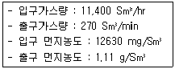
- 10.5%
- 11.1%
- 12.5%
- 13.1%
(정답률: 57%)
54. 먼지농도 10g/m3 인 배기가스를 1200m3/min로 배출하는 배출구에 여과집진장치를 설치하고자 한다. 이 여과집진장치의 평균 여과속도는 3m/min 이고, 여기에 직경 20cm, 길이 4m의 여과백을 사용한다면 필요한 여과백의 수는 ?
- 120개
- 140개
- 160개
- 180개
(정답률: 55%)
55. 벤츄리 스크러버에서 액가스비를 크게 하는 요인으로 옳지 않은 것은?
- 처리가스의 온도가 높을 때
- 먼지입자의 점착성이 클 때
- 분진의 입경이 클 때
- 먼지입자의 친수성이 적을 때
(정답률: 50%)
56. 가스 중의 불화수소를 수산화나트륨 용액과 향류로 접촉시켜 90% 흡수시키는 충전탑의 흡수율을 99.9% 로 향상시키고자 한다. 이 때 충전층의 높이는? (단, 흡수액상의 불화수소의 평형분압은 0으로 가정함 )
- 81배 높아져야 한다.
- 27배 높아져야 한다.
- 9배 높아져야 한다.
- 3배 높아져야 한다.
(정답률: 44%)
57. 처리가스량 25420 m3/hr, 압력손실이 100mmH2O 인 집진장치의 송풍기 소요동력은 약 얼마인가 ? (단, 송풍기의 효율은 60%, 여유율은 1.3 )
- 9 kW
- 12 kW
- 15 kW
- 18 kW
(정답률: 48%)
58. 다음과 같은 일반적인 베르누이의 정리에 적용되는 조건이 아닌 것은?
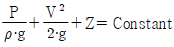
- 정상 상태의 흐름이다.
- 직선관에서만의 흐름이다.
- 같은 유선상에 있는 흐름이다.
- 마찰이 없는 흐름이다.
(정답률: 56%)
59. 집진율이 70%인 원심력집진장치 후단에 집진효율이 90%인 전기집진장치를 직렬로 연결하여 운전한다. 이 때 총괄 집진효율은 ?
- 95.0%
- 95.5%
- 97.0%
- 98.5%
(정답률: 56%)
60. 무촉매환원법에 의한 배출가스 중 NOx를 제거하는 방법에 관한 설명으로 가장 거리가 먼 것은?
- NOx의 제거율은 비교적 높아 95% 이상이다.
- 제거율을 높이기 위해서는 보통 1000℃ 정도의 고온과 NH3/NO 가 2 이상의 암모니아의 첨가가 필요하다.
- NO의 암모니아에 의한 환원에는 보통 산소의 공존이 필요하다.
- 반응기 등의 설비가 필요하지 않아 설비비는 작고, 특히 더러운 가스의 NOx의 제거에 적합하다.
(정답률: 39%)
4과목: 대기오염 공정시험기준(방법)
61. 원자흡광광도법에서 화학적 간섭을 방지하는 방법으로 가장 거리가 먼 것은?
- 이온교환에 의한 방해물질 제거
- 표준첨가법의 이용
- 미량의 간섭원소 첨가
- 은폐제의 첨가
(정답률: 66%)
62. 다음 분석가스 중 아연아민착염용액을 흡수액으로 사용하는 것은 ?
- 브롬화합물
- 포름알데히드
- 황화수소
- 질소산화물
(정답률: 50%)
63. 굴뚝 배출가스내의 이황화탄소 분석방법 중 흡광광도법 측정파장으로 옳은 것은?
- 435nm
- 560nm
- 620nm
- 670nm
(정답률: 64%)
64. 굴뚝 등에서 배출되는 오염물질별 분석방법으로 옳지 않은 것은?
- 메틸렌블루우법에 의한 황화수소 분석 시 분석용 시료용액과 황화수소 표준액을 메스플라스크에 취하고 P-아미노디메틸아닐린 용액을 가한 후 뚜껑을 하여 흔들지말고 조용히 뒤집어서 혼합한다.
- 염화수소를 티오시안산제이수은법으로 분석 시 시료에 메틸알콜 10mL을 가하고 마개를 한 후 흔들어 잘 섞는다.
- 이황화탄소를 자외선 가시선 분광법(흡광광도법)으로 분석 시 황화수소를 제거하기 위해 흡수병 중 한 개는 전처리용으로 초산카드뮴용액을 넣는다.
- 황산화물을 중화적정법으로 분석 시 이산화탄소가 공존하면 방해성분으로 작용한다.
(정답률: 38%)
65. 다음 가스크로마토그래프 분석에 사용되는 검출기 중 금속필라멘트 또는 전기저항체를 검출소자로 하여 금속판안에 들어있는 본체와 여기에 안정된 직류전기를 공급하는 전원회로, 전류조절부, 신호검출 전기회로, 신호 감쇄부 등으로 구성되어 있는 것은?
- 전자포획형 검출기 (ECD)
- 열전도도 검출기 (TCD)
- 수소염 이온화 검출기 (FID)
- 염광광도 검출기 (FPD)
(정답률: 66%)
66. 원형굴뚝의 단면적이 13-15m2인 경우 배출되는 먼지 측정을 위한 ① 반경 구분수와 ② 측정점 수는?
- ① 2, ② 8
- ① 3, ② 12
- ① 4, ② 16
- ① 5, ② 20
(정답률: 60%)
67. 일정한 굴뚝을 거치지 않고 외부로 비산 배출되는 먼지 측정을 위한 하이볼륨에어샘플러법의 시료채취방법으로 옳지 않은 것은?(오류 신고가 접수된 문제입니다. 반드시 정답과 해설을 확인하시기 바랍니다.)
- 시료채취장소는 원칙적으로 측정하려고 하는 발생원의 부지경계선상에 선정하며 풍향을 고려하여 그 발생원의 비산먼지 농도가 가장 높을 것으로 예상되는 지점 3개소 이상을 선정한다.
- 따로 풍상방향에 대상 발생원의 영향이 없을 것으로 추측되는 곳에 대조위치를 선정한다.
- 시료채취는 1회 10분 이상 연속 채취하며, 풍속이 1m/초 미만으로 바람이 거의 없을 때는 시료채취를 하지 않는다.
- 풍향 풍속의 측정 시 연속기록 장치가 없을 경우에는 적어도 10분 간격으로 같은 지점에서의 3회 이상 풍향풍속을 측정하여 기록한다.
(정답률: 56%)
68. 대기오염공정시험기준 중 환경대기 내의 아황산가스 측정방법으로 옳지 않은 것은?
- 적외선 형광법
- 용액 전도율법
- 불꽃광도법
- 자외선 형광법
(정답률: 61%)
69. 굴뚝연속자동측정기 측정방법 중 도관의 부착방법으로 옳지 않은 것은?
- 도관은 가능한 짧은 것이 좋다.
- 냉각도관은 될 수 있는 대로 수직으로 한다.
- 기체·액체 분리관은 도관의 부착위치 중 가장 높은 부분 또는 최고 온도의 부분에 부착한다.
- 응축수의 배출에 쓰는 펌프는 충분히 내구성이 있는 것을 쓰고, 이 때 응축수 트랩은 사용하지 않아도 된다.
(정답률: 58%)
70. 다음은 환경대기 중 휘발성유기화합물 (VOCs)의 시험방법에서 사용되는 용어의 정의이다. ( )안에 알맞은 것은?
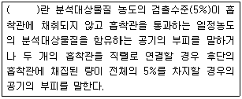
- 머무름부피 (Retention Volume)
- 안전부피 (Safe Sample Volume)
- 돌파부피 (Breakthrough Volume)
- 탈착부피 (Desorption Volume)
(정답률: 50%)
71. 환경대기 중 석면먼지의 농도표시 방법으로 옳은 것은?(관련 규정 개정전 문제로 여기서는 기존 정답인 1번을 누르면 정답 처리됩니다. 자세한 내용은 해설을 참고하세요.)
- 표준상태 (0℃, 760mmHg)의 기체 1mL 중에 함유된 석면섬유의 개수 (개/mL)
- 표준상태 (0℃, 760mmHg)의 기체 1L 중에 함유된 석면섬유의 개수 (개/L)
- 표준상태 (0℃, 760mmHg)의 기체 1mL 중에 함유된 석면섬유의 무게 (mg/mL)
- 표준상태 (0℃, 760mmHg)의 기체 1L 중에 함유된 석면섬유의 무게 (mg/L)
(정답률: 56%)
72. 굴뚝 배출 가스상 물질의 시료채취방법으로 옳지 않은 것은?
- 채취관은 흡입가스의 유량, 채취관의 기계적 강도, 청소의 용이성 등을 고려해서 안지름 6-25mm 정도의 것을 쓴다.
- 채취관의 길이는 선정한 채취점까지 끼워 넣을 수 있는 것이어야 하고 , 배출가스의 온도가 높을 때에는 관이 구부러지는 것을 막기 위한 조치를 해두는 것이 필요하다.
- 여과재를 끼우는 부분은 교환이 쉬운 구조의 것으로 한다.
- 일반적으로 사용되는 불소수지 도관은 150℃ 이상에서는 사용할 수 없다.
(정답률: 60%)
73. 환경대기 중 휘발성유기화합물 (VOCs)의 시험방법으로 옳지 않은 것은?
- 자동연속용매추출분석법
- 고체흡착용매추출법
- 자동연속열탈착분석법
- 고체흡착열탈착법
(정답률: 31%)
74. 다음 분석대상 가스 중 여과재로 "카아보란덤"을 사용하는 것은?
- 비소
- 브롬
- 이황화탄소
- 벤젠
(정답률: 43%)
75. 환경대기 중 금속의 원자흡수분광광도법 (원자흡광광도법)으로 옳지 않은 것은?
- 니켈 분석 시 다량의 탄소가 포함된 시료의 경우, 시료를 채취한 여과지를 적당한 크기로 잘라서 자기도가니에 넣어 전기로를 사용하여 800℃에서 30분 이상 가열한 후 전처리 조작을 행한다.
- 철 분석 시 규소(Si)를 다량 포함하고 있을 때는 0.2% 황산나트륨 (Na2SO4) 용액을 첨가하여 분석하고, 유기산 (특히 시트르산)이 다량 포함되어 있을 때는 1% 염산을 가하여 간섭을 줄인다.
- 아연 분석 시 213.8nm 측정파장을 이용할 경우 불꽃에 의한 흡수 때문에 바탕선 (Baseline)이 높아지는 경우가 있다.
- 크롬 분석 시 아세틸렌 - 공기 불꽃에서는 철, 니켈 등에 의한 방해를 받으므로 이 경우 황산나트륨, 황산칼륨 또는 이플루오린화수소암모늄을 1% 정도 가하여 분석 하거나, 아세틸렌 - 산화이질소 불꽃을 사용하여 방해를 줄일 수 있다.
(정답률: 53%)
76. 원자흡광분석에 사용되는 불꽃 중 불꽃의 온도가 높아 불꽃중에서 해리하기 어려운 내화성 산화물 (Refractoryoxide)을 만들기 쉬원 원소 분석에 가장 적합한 것은?
- 아세틸렌 - 공기
- 아세틸렌 - 산소
- 수소 - 공기 - 아르곤
- 아세틸렌 - 아산화질소
(정답률: 58%)
77. 굴뚝 배출가스 중의 금속성분을 분석할 때 굴뚝 배출가스의 온도가 500-1000℃ 일 경우에 사용하는 원통여과지로 가장 적합한 것은?
- 유리 섬유제 원통여과지
- 석영 섬유제 원통여과지
- 셀룰로스 섬유제 원통여과지
- 고무 섬유제 원통여과지
(정답률: 57%)
78. 굴뚝 배출가스 중 황화수소를 용량법으로 정량할 때 종말점의 판단을 위한 지시약은?
- 아르세나죠 III
- 메틸렌 레드
- 녹말 용액
- 메틸렌 블루
(정답률: 63%)
79. 다음 중 흡광도를 측정하기 위한 순서로 원칙적으로 제일 먼저 행하여야 할 행위는?
- 시료셀과 대조셀을 넣고 눈금판의 지시치의 차이를 확인한다.
- 광로를 차단한 후 대조셀로 영점을 맞춘다.
- 광원으로부터 광속을 통하여 눈금 100에 맞춘다.
- 눈금판의 지시 안정 여부를 확인한다.
(정답률: 61%)
80. 가스크로마토그래프법에 관한 설명으로 옳지 않은 것은?(관련 규정 개정전 문제로 여기서는 기존 정답인 2번을 누르면 정답 처리됩니다. 자세한 내용은 해설을 참고하세요.)
- 분리관오븐의 온도조절 정밀도는 ±0.5℃의 범위이내 전원 전압변동 10%에 대하여 온도변화 ±0.5℃ 범위이내 (오븐의 온도가 150℃ 부근일 때) 이어야 한다.
- 보유시간을 측정할 때는 2회 측정하여 그 평균치를 구하며 일반적으로 5-30분 정도에서 측정하는 피이크의 보유시간은 반복시험을 할 때 ±5% 오차범위 이내이어야 한다.
- 기록계는 스트립 차아트식 자동평형 기록계로 스팬 전압 1mV, 펜 응답시간 2초 이내 , 기록지 이동속도는 10mm/분을 포함한 다단변속이 가능한 것이어야 한다.
- 운반가스는 일반적으로 열전도도형 검출기(TCD)에서는 순도 99.8% 이상의 수소나 헬륨을, 수소염 이온화 검출기(FID)에서는 순도 99.8% 이상의 질소 또는 헬륨을 사용한다.
(정답률: 59%)
5과목: 대기환경관계법규
81. 다음은 대기환경보전법규상 자동차연료·첨가제 또는 촉매제 검사기관의 지정기준이다. ( )안에 해당되는 것으로 거리가 먼 것은?
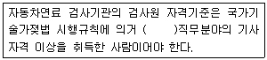
- 화공 및 세라믹
- 전기
- 환경
- 기계(자동차분야)
(정답률: 40%)
82. 다음은 대기환경보전법령상 부과금의 징수유예·분할납부 및 징수절차에 관한 사항이다. ( )안에 알맞은 것은?
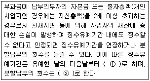
- ① 2년 이내, ② 12회 이내
- ① 2년 이내, ② 18회 이내
- ① 3년 이내, ② 12회 이내
- ① 3년 이내, ② 18회 이내
(정답률: 44%)
83. 다중이용시설 등의 실내공기질 관리법규상 "실내주차장"의 CO(ppm) 실내공기질 유지기준은?
- 200 이하
- 150 이하
- 100 이하
- 25 이하
(정답률: 36%)
84. 대기환경보전법에서 사용하는 용어의 뜻으로 옳지 않은 것은? (12년 2회)
- "저공해엔진"이란 자동차에서 배출되는 대기오염물질을 줄이기 위한 엔진(엔진 개조에 사용하는 부품을 포함한다)으로서 환경부령으로 정하는 배출허용기준에 맞는 엔진을 말한다.
- "검댕"이란 연소할 때에 생기는 유리탄소가 응결하여 입자의 지름이 1미크론 이상이 되는 입자상물질을 말한다.
- "온실가스"란 적외선 복사열을 흡수하거나 다시 방출하여 온실효과를 유발하는 대기 중의 가스상태 물질로서 이산화탄소, 메탄, 아산화질소, 수소불화탄소, 과불화탄소, 육불화황을 말한다.
- "촉매제"란 연료절감을 위해 엔진 구동부에 사용되는 화학물질로서 부피비율로 1퍼센트 미만의 비율로 첨가하는 물질을 말한다.
(정답률: 49%)
85. 대기환경보전법령상 사업장 분류기준 중 4종 사업장 분류기준으로 옳은 것은?
- 대기오염물질발생량의 합계가 연간 80톤 이상 100톤 미만
- 대기오염물질발생량의 합계가 연간 20톤 이상 80톤 미만
- 대기오염물질발생량의 합계가 연간 10톤 이상 20톤 미만
- 대기오염물질발생량의 합계가 연간 2통 이상 10톤 미만
(정답률: 52%)
86. 다음은 대기환경보전법령상 황사대책위원회에 관한 사항이다. 아래 밑줄 친 분야에 해당하지 않는 것은?
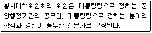
- 화공분야
- 예방의학분야
- 해양분야
- 국제협력분야
(정답률: 32%)
87. 대기환경보전법규상 휘발유(알코올 포함)사용 자동차 또는 가스사용 자동차의 운행자 수시점검 및 정기검사의 배출허용기준(무부하검사방법)으로 옳은 것은?
- 일산화탄소: 1.0% 이하, 탄화수소: 150ppm
- 일산화탄소: 1.2% 이하, 탄화수소: 220ppm
- 일산화탄소: 2.5% 이하, 탄화수소: 400ppm
- 일산화탄소: 4.5% 이하, 탄화수소: 600ppm
(정답률: 34%)
88. 대기환경보전법규상 자동차연료형 첨가제의 종류로 가장 거리가 먼 것은?
- 세척제
- 다목적첨가제
- 기관윤활제
- 유동성향상제
(정답률: 38%)
89. 대기환경보전법규상 특정대기유해물질로 옳지 않은 것은?
- 이황화메틸
- 베릴륨
- 바나듐
- 1,3-부타디엔
(정답률: 47%)
90. 대기환경보전법상 환경부령으로 정하는 제조기준에 맞지 아니하게 자동차 연료·첨가제 또는 촉매제를 제조한 자에 대한 벌칙기준으로 옳은 것은?
- 7년 이하의 징역이나 1억원 이하의 벌금
- 5년 이하의 징역이나 3천만원 이하의 벌금
- 1년 이하의 징역이나 500만원 이하의 벌금
- 300만원 이하의 벌금
(정답률: 48%)
91. 다음 중 대기환경보전법규상 특별시장·광역시장·도지사 또는 특별자치도지사가 설치하는 대기오염 측정망에 해당하는 것은?
- 산성강하물측정망
- 광화학대기오염물질측정망
- 지구대기측정망
- 대기중금속측정망
(정답률: 51%)
92. 대기환경보전법령상 일일초과배출량 및 일일유량의 산정방법으로 옳지 않은 것은?
- 측정유량의 단위는 매분 당 세제곱미터로 한다.
- 먼지 외 그 밖의 오염물질 배출농도의 단위는 ppm으로 한다.
- 일일조업시간은 배출량을 측정하기 전 최근 조업한 30일 동안의 배출시설 조업시간 평균치를 시간으로 표시한다.
- 일반오염물질의 배출허용기준초과 일일오염물질 배출량은 소수점 이하 첫째자리까지 계산한다.
(정답률: 40%)
93. 대기환경보전법규상 위임업무 보고사항 중 보고횟수가 연1회 인 것은?(관련 규정 개정전 문제로 여기서는 기존 정답인 3번을 누르면 정답 처리됩니다. 자세한 내용은 해설을 참고하세요.)
- 배출업소 지도·점검 및 행정처분실적
- 수업자동차 배출가스 인증 및 검사현황
- 휘발성유기화합물 배출시설설치 신고현황
- 환경오염사고 발생 및 조치사항
(정답률: 46%)
94. 대기환경보전법규상 측정기기의 부착·운영 등과 관련된 행정처분기준 중 사업자가 부착한 굴뚝 자동측정기기의 측정자료를 관제센터로 전송하지 아니한 경우 각 위반차수별(1차~4차) 행정처분기준으로 옳은 것은?
- 경고-조치명령-조업정지10일-조업정지30일
- 조업정지10일-조업정지30일-경고-허가취소
- 조업정지10일-조업정지30일-조치이행명령-사용중지
- 개선명령-조업정지30일-사용중지-허가취소
(정답률: 48%)
95. 대기환경보전법령상 과태료 부과기준 중 위반행위의 횟수에 따른 일반기준은 해당 위반행위가 있는 날 이전 최근 얼마간 같은 위반행위로 부과처분을 받은 경우에 적용하는가?
- 3월간
- 6월간
- 1년간
- 3년간
(정답률: 47%)
96. 다중이용시설 등의 실내공기질 관리법상 다중이용시설을 설치하는 자는 환경부장관이 고시한 오염물질방출건축자재를 사용하여서는 안되는데, 이 규정을 위반하여 사용한 자에 대한 과태료 부과기준으로 옳은 것은?
- 1천만원 이하의 과태료에 처한다.
- 500만원 이하의 과태료에 처한다.
- 300만원 이하의 과태료에 처한다.
- 100만원 이하의 과태료에 처한다.
(정답률: 38%)
97. 환경정책기본법령상 납(Pb)의 대기환경기준으로 옳은 것은?
- 연간평균치 0.5㎍/m3이하
- 3개월 평균치 1.5㎍/m3이하
- 24시간 평균치 1.5㎍/m3이하
- 8시간 평균치 1.5㎍/m3이하
(정답률: 53%)
98. 대기환경보전법령상 초과부과금을 산정할 때 다음 오염물질 중 1킬로그램당 부과금액이 가장 높은 것은?
- 시안화수소
- 암모니아
- 불소화합물
- 이황화탄소
(정답률: 51%)
99. 대기환경보전법규상 휘발유를 연료로 사용하는 "경자동차"의 배출가스 보증기간 적용기준으로 옳은 것은? (단, 2009년 1월 1일 이후 제작자동차)(관련 규정 개정전 문제로 여기서는 기존 정답인 1번을 누르면 정답 처리됩니다. 자세한 내용은 해설을 참고하세요.)
- 10년 또는 192,000㎞
- 6년 또는 100,000㎞
- 2년 또는 160,000㎞
- 1년 또는 20,000㎞
(정답률: 49%)
100. 다음은 대기환경보전법규상 첨가제·촉매제 제조기준에 맞는 제품의 표시 방법이다. ( )안에 알맞은 것은?
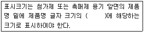
- 100분의 10 이상
- 100분의 15 이상
- 100분의 20 이상
- 100분의 30 이상
(정답률: 56%)